library("reticulate")
# reticulate::install_miniconda()
use_python(file.path(miniconda_path(), "bin", "python3.11"))
# py_install("pandas")
# py_install("matplotlib")
# py_install("seaborn")Scatterplot
First explanation
A scatterplot is a graphical representation of data points on a two-dimensional Cartesian plane, typically used to visualize the relationship between two variables. It’s a fundamental tool in statistics and data analysis, providing insights into the patterns and associations between data points.
About the scatterplot
Axis: A scatterplot consists of two axes: the horizontal (x-axis) and the vertical (y-axis). Each axis represents a different variable or attribute of the data.
Data Points: Each data point is represented as a single dot on the scatterplot. These dots are placed on the graph based on the values of the two variables being compared.
Variable Mapping: The variable you’re investigating or measuring goes on the x-axis, while the variable you’re trying to understand or predict goes on the y-axis. For example, if you’re studying the relationship between hours spent studying (x-axis) and exam scores (y-axis), you would place each student’s data point on the graph according to their study hours and exam score.
Pattern Interpretation:
- Positive Relationship: If the data points generally form an upward-sloping pattern from left to right, it indicates a positive relationship. This means that as the x-variable increases, the y-variable tends to increase as well.
- Negative Relationship: If the data points form a downward-sloping pattern from left to right, it suggests a negative relationship. In this case, as the x-variable increases, the y-variable tends to decrease.
- No Relationship: If the data points are scattered randomly without a discernible pattern, it suggests no significant relationship between the two variables.
Outliers: Outliers are data points that fall far away from the main cluster of data points on the scatterplot. They can be important to identify because they may indicate unusual or extreme values that can skew your analysis.
Data Clusters: Sometimes, data points form clusters or groups on the scatterplot. These clusters can provide insights into subpopulations within your data.
Axis Labels and Title: A good scatterplot should have clear labels for both axes, indicating what each axis represents, and a title that describes the purpose of the plot or the relationship being explored.
Scatterplots are valuable for various purposes, such as identifying trends, detecting outliers, assessing the strength and direction of relationships between variables, and making predictions based on observed patterns. They are often used in fields like statistics, economics, social sciences, and many others to visually explore and analyze data.
Visual alphabet
Scatterplot is a common data visualization used to display the relationship between two numerical variables. Its visual representation relies on various fundamental visual elements, collectively forming the “visual alphabet” of a scatterplot. These elements include:
Points (Markers): Points are the primary visual elements, each representing a data point or observation. They can take various shapes, such as circles, dots, triangles, or other symbols.
X-Axis: The x-axis represents one of the two numerical variables under analysis and displays a range of values with tick marks and labels.
Y-Axis: Similar to the x-axis, the y-axis represents the other numerical variable and displays its range of values with tick marks and labels.
Axis Labels: Scatterplots include labels for the x-axis and y-axis, providing context for interpreting the plot.
Title: A title is often added to describe the plot’s purpose or content.
Legend: If the plot involves different data groups or categories (e.g., indicated by color or shape), a legend explains the meaning of each group.
Gridlines: Optional gridlines aid in reading specific values from the axes and serve as a visual reference.
Colors: Color differentiation can be used to distinguish between data groups or categories, with each group assigned a unique color.
Transparency (Alpha): In some cases, transparency (alpha values) can be applied to points to highlight data density or overlapping points.
Trend Lines (Regression Lines): While not always present, trend lines, such as regression lines, may be added to illustrate data trends.
Annotations: Text labels or annotations can be applied to specific data points to provide additional context or highlight important observations.
Background and Borders: Adjustments to the background color and borders of the plot area can enhance visual clarity and aesthetics.
These visual elements collectively form the essential components of a scatterplot, allowing viewers to understand the relationships, patterns, and trends between the two numerical variables being analyzed. Designers and data analysts can manipulate these elements to create effective and informative scatterplots for data exploration and communication.
Programming
First we can configure the environment for mixed programming. Using another engine will need another setup.
library("knitr")
opts_chunk$set(
fig.width = 6,
fig.height = 4,
message = FALSE,
warning = FALSE,
echo = TRUE,
results = "asis"
)library("ggplot2")
library("magrittr")
library("dplyr")
diamonds %<>%
sample_n(5000) # disminuir los datos p
# diamonds %>%
# glimpseimport numpy as np
import pandas as pd
import matplotlib.pyplot as plt
import seaborn as sns
import matplotlib.colors
# You can uncomment this line to change the style of the graphs.
# plt.style.use('ggplot')
diamonds = r.diamondsUsing r-base
plot(price ~ carat, data = diamonds)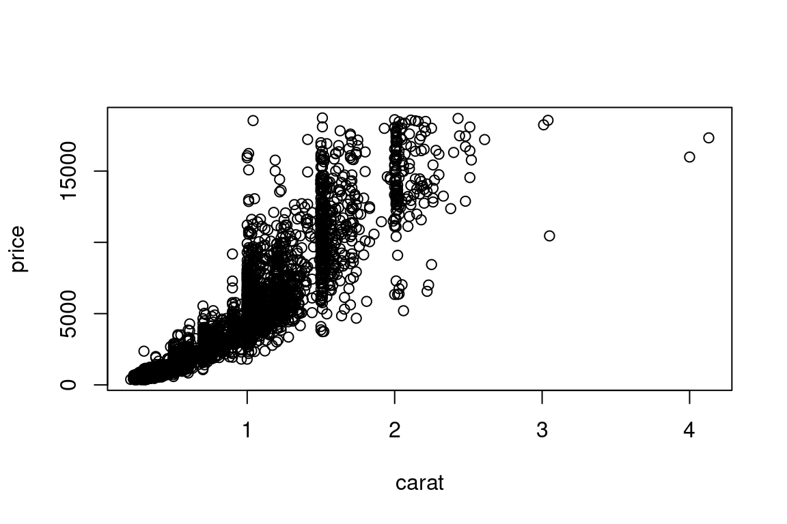
Step-by-Step Breakdown:
plot: This is a fundamental R function used to create various types of plots, including scatterplots. In this case, it’s used to create a scatterplot.
price ~ carat: This notation specifies the variables to be plotted. The tilde (~) separates the dependent variable (“price”) from the independent variable (“carat”). Essentially, it’s saying that you want to plot “price” on the y-axis and “carat” on the x-axis.
data = diamonds: This parameter specifies the dataset from which the variables “price” and “carat” are taken. In this case, it uses the “diamonds” dataset, which presumably contains information about diamonds, including their prices and carat weights.
When you execute this code, it will generate a scatterplot with “carat” on the x-axis and “price” on the y-axis. Each point on the plot represents a diamond, where the x-coordinate is the diamond’s carat weight, and the y-coordinate is its price. This type of visualization allows you to explore the relationship between diamond weight (carat) and price, helping you identify patterns, trends, or outliers in the data. Scatterplots are commonly used for data exploration and visualization in statistics and data analysis.
Using ggplot
ggplot(diamonds) +
aes(x = carat, y = price) +
geom_point()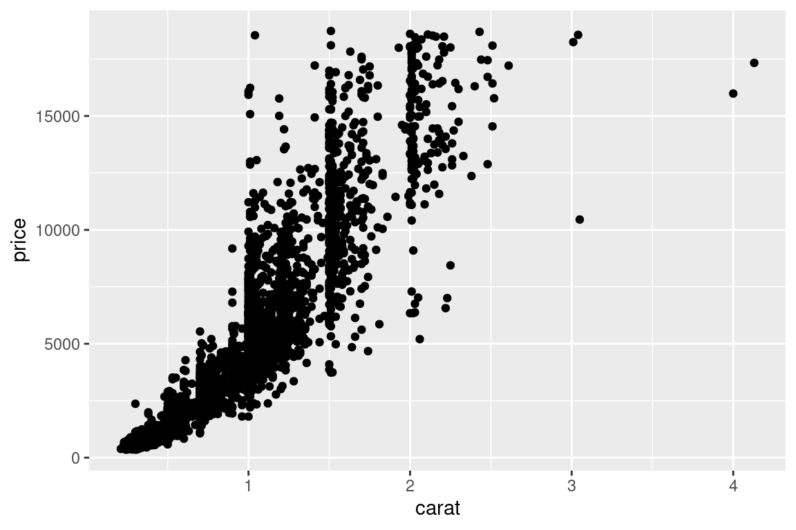
Explanation of ggplot implemntation, step-by-Step Breakdown:
Initializing ggplot: The code begins by initializing a ggplot object, with the diamonds dataset as its data source. The diamonds dataset is a built-in dataset in ggplot2, containing various attributes of diamonds, including carat, cut, clarity, and price. This step sets the dataset for plotting.
Aesthetic Mapping (aes): The line aes(x = carat, y = price) specifies the aesthetics (visual properties) of the plot. It instructs ggplot to use the carat column from the dataset for the x-axis (x) and the price column for the y-axis (y). Essentially, it maps the carat values to the horizontal axis and the price values to the vertical axis, which is fundamental for creating a scatterplot.
Adding Points (geom_point): The final line, geom_point(), adds a geometric layer to the plot. Specifically, it adds points to the plot, creating a scatterplot. Given the aesthetics defined earlier (aes(x = carat, y = price)), ggplot understands that the carat values correspond to the x-coordinates, and the price values correspond to the y-coordinates. As a result, the code generates a scatterplot representing diamonds, where each point represents a diamond’s carat (weight) on the x-axis and its price on the y-axis.
In Summary: This R code utilizes the ggplot2 library to produce a scatterplot, offering a visual depiction of the relationship between diamond carat and price. Scatterplots like this one are valuable for exploring and understanding data patterns and trends within the diamonds dataset or similar datasets.
Using pandas
plt.figure()
diamonds.plot.scatter("carat", "price")
plt.show()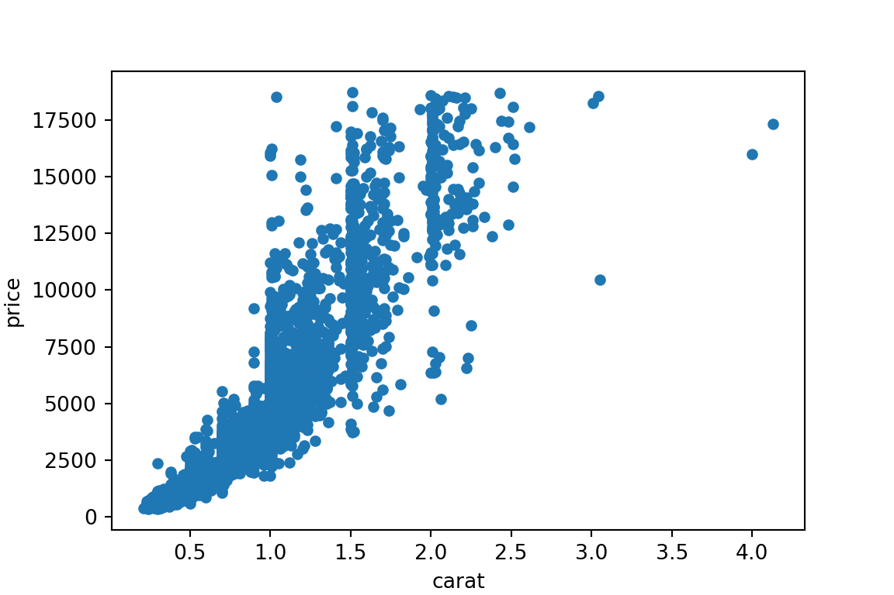
Explanation of pandas plotting
plt.figure(): This line creates a new empty figure for the plot. In Matplotlib, a figure is like a canvas or container for one or more plots or charts. This line initializes a new figure to prepare for the scatterplot.
diamonds.plot.scatter("carat", "price"): This line creates a scatterplot using the “diamonds” dataset. Here’s what’s happening within this line:
diamonds: It seems that “diamonds” is assumed to be a Pandas DataFrame, which is a common data structure in Python for tabular data..plot: This is a Pandas method that allows you to create various types of plots from a DataFrame..scatter("carat", "price"): This part specifies that you want to create a scatterplot with “carat” values on the x-axis and “price” values on the y-axis. It essentially tells Pandas to use the “carat” column for the x-coordinates and the “price” column for the y-coordinates when creating the scatterplot.
plt.show(): This line displays the plot on your screen. Without this line, the plot would be created but not shown. This line ensures that the scatterplot is visible to you.
In summary, this Python code uses Matplotlib and Pandas to create and display a scatterplot from a dataset called “diamonds.” The scatterplot shows the relationship between the “carat” (diamond weight) and “price” (diamond price) columns from the dataset. Each point on the scatterplot represents a diamond, with its carat value on the x-axis and its price on the y-axis. This type of visualization is commonly used to explore and understand the relationship between two variables.
Using seaborn
sns.scatterplot(x='carat', y='price', data=diamonds)
plt.show()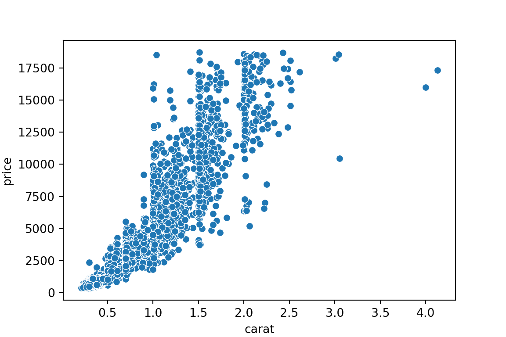
Explanation of seaborn use
sns.scatterplot: This line creates a scatterplot using Seaborn’s scatterplot function. It specifies that the “carat” values should be on the x-axis (x=‘carat’) and the “price” values on the y-axis (y=‘price’). Seaborn makes it easy to create visually appealing and informative scatterplots.
x='carat' and y='price': These parameters specify the variables to be plotted on the x-axis and y-axis, respectively. In this case, “carat” is chosen for the x-axis (horizontal) and “price” for the y-axis (vertical).
data=diamonds: This parameter specifies the dataset to be used for the plot. It assumes that “diamonds” is a Pandas DataFrame or a similar data structure containing the data for the plot.
plt.show(): This line is used to display the plot on the screen. Without this line, the plot would be created but not shown. It ensures that the scatterplot is visible for examination.
In summary, this Python code uses Seaborn to create a scatterplot from the “diamonds” dataset. It displays the relationship between the “carat” (diamond weight) values on the x-axis and the “price” values (diamond price) on the y-axis. The fit_reg=False parameter indicates that no regression line will be added to the scatterplot. This type of visualization is often used to explore the relationship between two variables and assess patterns and trends in the data.
Using matplotlib
plt.scatter(diamonds['carat'], diamonds['price'])
plt.xlabel('carat')
plt.ylabel('price')
plt.title('Scatterplot of Carat vs. Price')
plt.show()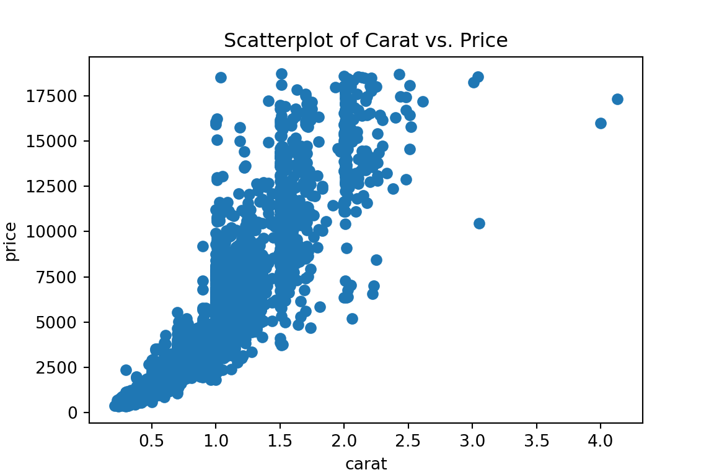
How it works
plt.scatter(): This line calls the scatter function from the Matplotlib library to create a scatterplot. It takes two arguments:
diamonds['carat']: This specifies the values to be plotted on the x-axis (horizontal axis). It assumes that diamonds is a DataFrame or similar data structure, and it selects the “carat” column as the x-values.diamonds['price']: This specifies the values to be plotted on the y-axis (vertical axis). It selects the “price” column as the y-values.
plt.xlabel('carat'): This line sets the label for the x-axis to “carat,” indicating that the x-axis represents the “carat” values (diamond weight).
plt.ylabel('price'): This line sets the label for the y-axis to “price,” indicating that the y-axis represents the “price” values (diamond price).
plt.title('Scatterplot of Carat vs. Price'): This line sets the title of the plot to “Scatterplot of Carat vs. Price,” providing a brief description of the plot’s content.
plt.show(): Finally, this line displays the scatterplot on your screen. Without this line, the plot would be created but not shown. This command ensures that the scatterplot is visible for examination.
In summary, the code creates a scatterplot using Matplotlib, showing the relationship between “carat” (diamond weight) on the x-axis and “price” (diamond price) on the y-axis. The labels for the axes and a title are added to provide context to the plot. Scatterplots like this are commonly used in data visualization to explore relationships between two variables.
Adding colors
The provided code creates scatterplots that visualize the relationship between two variables, “carat” (diamond weight) and “price” (diamond price), while also incorporating the “cut” (diamond cut quality) of the diamonds as a categorical variable represented by colors.
In r-base
plot(price ~ carat, col = cut, data = diamonds, pch = 20)
legend(0.25, 17500, legend=unique(diamonds$cut),
col=diamonds$cut, pch=20, cex=0.8)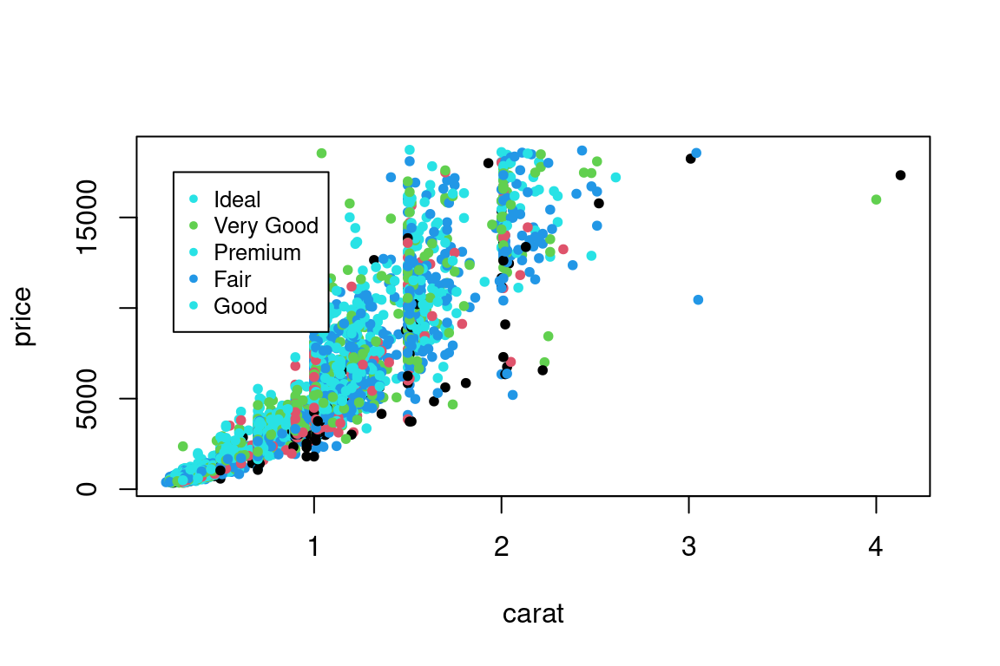
In ggplot
ggplot(diamonds) +
aes(x = carat, y = price, colour = cut) +
geom_point()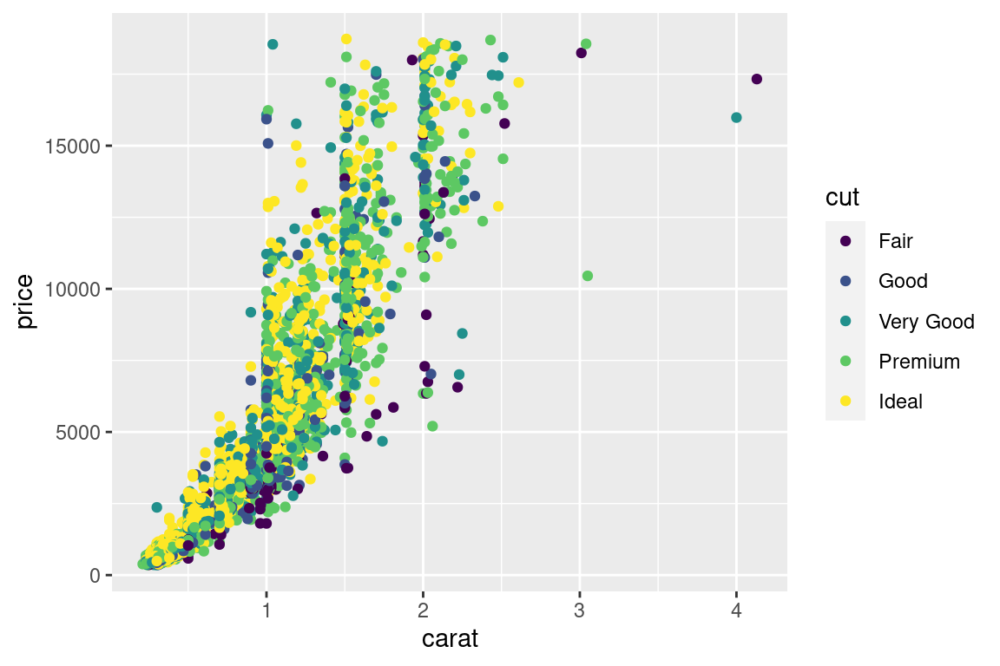
In pandas
plt.figure()
diamonds.plot.scatter("carat", "price", c="cut", colormap='viridis')
plt.show()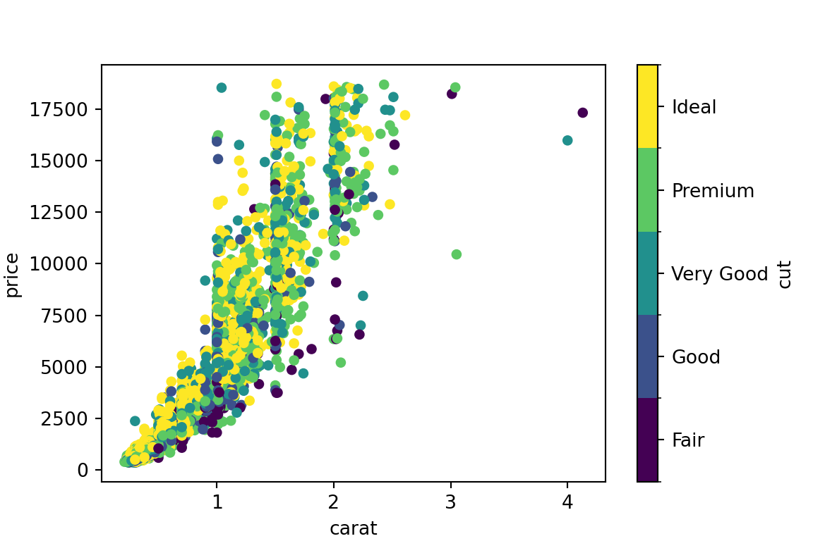
In seaborn
sns.scatterplot(x='carat', y='price', data=diamonds, hue='cut')
plt.show()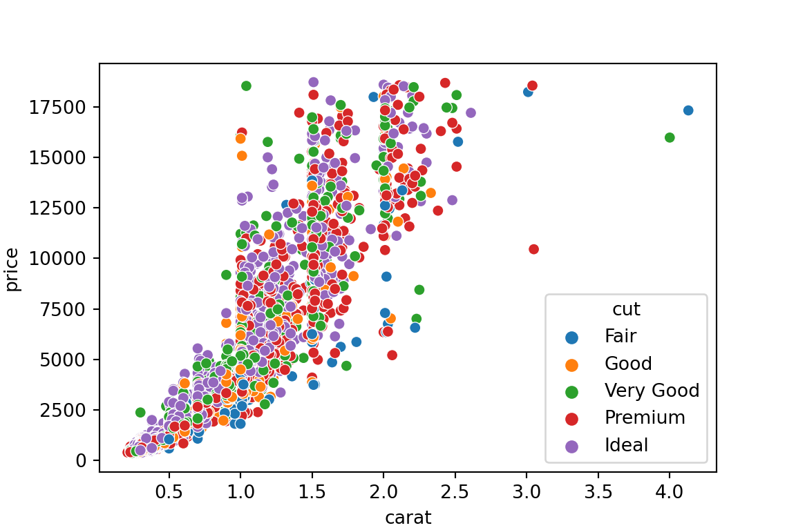
In matplotlib
legend_labels = diamonds['cut'].cat.categories # Get unique "cut"
plt.figure()
scatter = plt.scatter(diamonds['carat'], diamonds['price'], c=diamonds['cut'].cat.codes)
plt.xlabel('Carat')
plt.ylabel('Price')
plt.title('Scatterplot of Carat vs. Price (Colored by Cut)')
plt.legend(handles=scatter.legend_elements()[0], labels=list(legend_labels))
plt.show()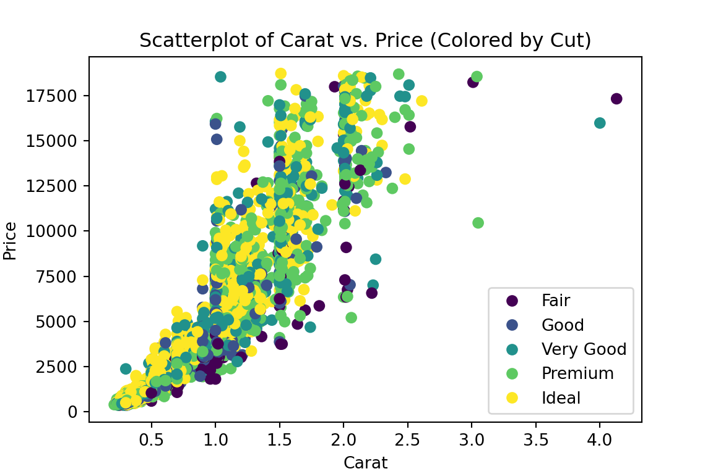
And more colors…
These plots are using a set of selected colors.
using r-base
colors = c('Fair' = 'blue', 'Good' = 'orange', 'Very Good' = 'green', 'Premium' = 'red', 'Ideal' = 'purple')
plot(price ~ carat, col = colors[cut], data = diamonds, pch = 20)
legend(0.25, 17500, legend=unique(diamonds$cut),
col=colors, pch=20, cex=0.8)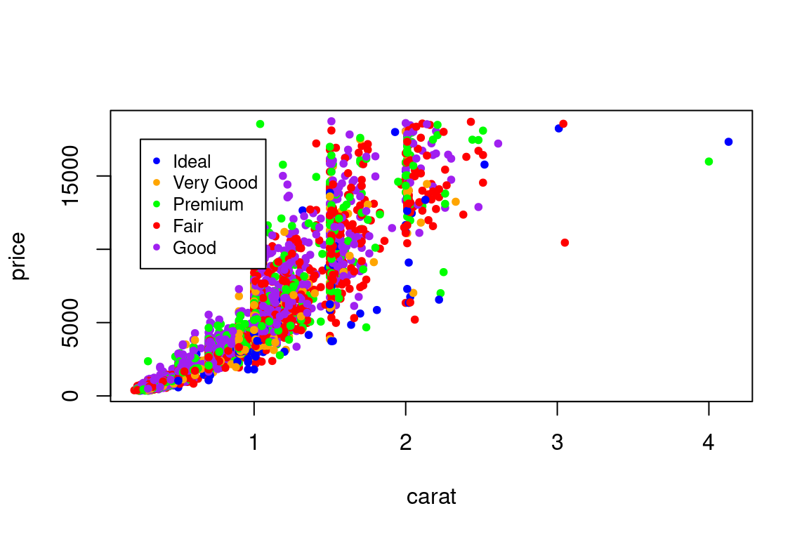
using ggplot
ggplot(diamonds) +
aes(x = carat, y = price, colour = cut) +
scale_color_manual(values = colors) +
geom_point()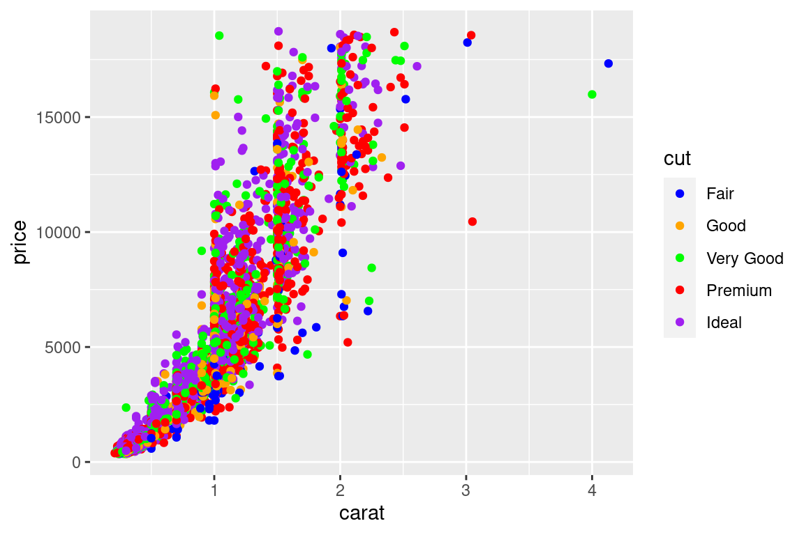
using pandas
colors = {'Fair':'blue', 'Good':'orange', 'Very Good':'green', 'Premium':'red', 'Ideal':'purple'}
colm = matplotlib.colors.ListedColormap(colors.values())
plt.figure()
gr = diamonds.plot.scatter("carat", "price", c = "cut", cmap = colm)
plt.show()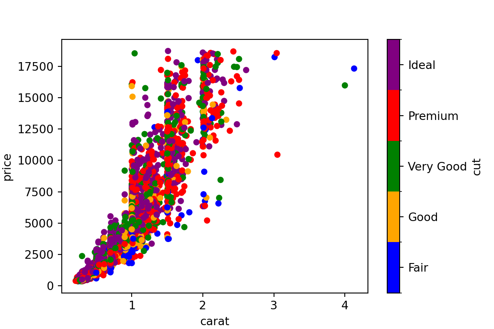
using seaborn
# Create the scatterplot with custom colors
sns.scatterplot(x='carat', y='price', data=diamonds, hue='cut', palette=colors)
plt.title('Scatterplot of Carat vs. Price (Colored by Cut)')
plt.show()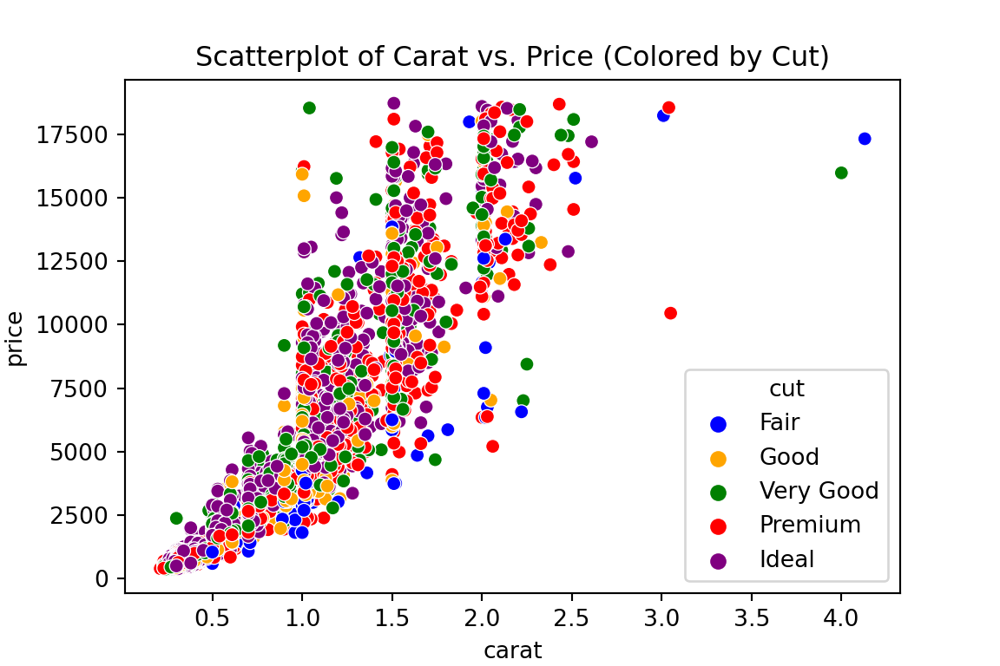
using matplotlib and a for
fig, ax = plt.subplots(figsize=(6, 6))
grouped = diamonds.groupby('cut')
for key, group in grouped:
group.plot(ax=ax, kind='scatter', x='carat', y='price', label=key, color=colors[key])
plt.show()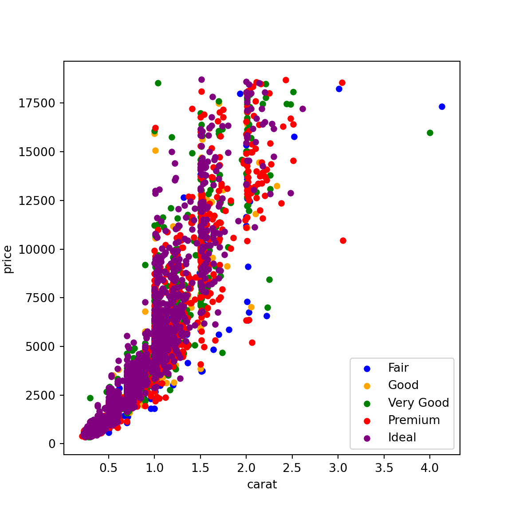
Adding a trending line
r-base code
model = lm(price ~ carat, data = diamonds)
plot(price ~ carat, data = diamonds, pch = 20)
abline(a = model$coefficients["(Intercept)"], b = model$coefficients["carat"], col = "magenta", lwd = 5)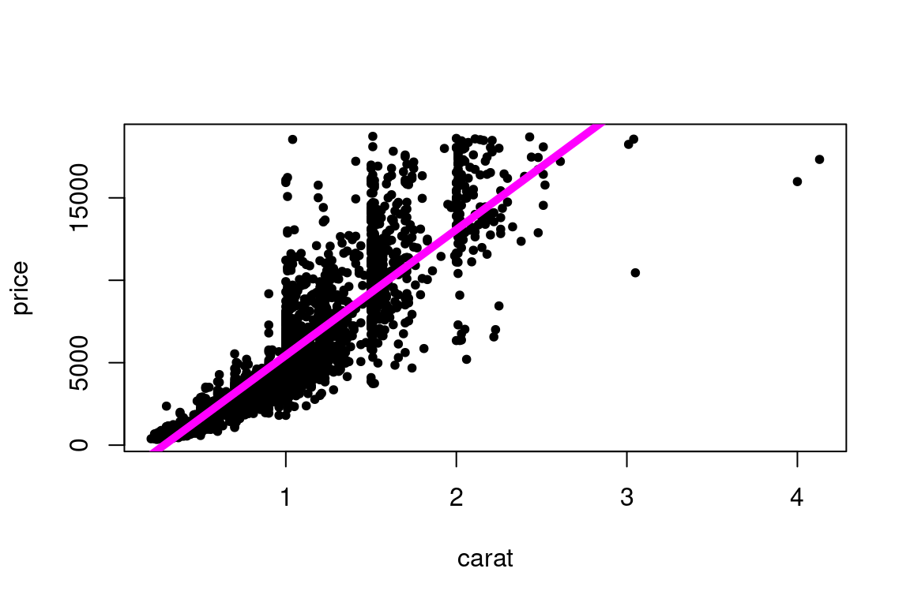
ggplot code
ggplot(diamonds) +
aes(x = carat, y = price) +
geom_point() +
geom_smooth(method = "lm")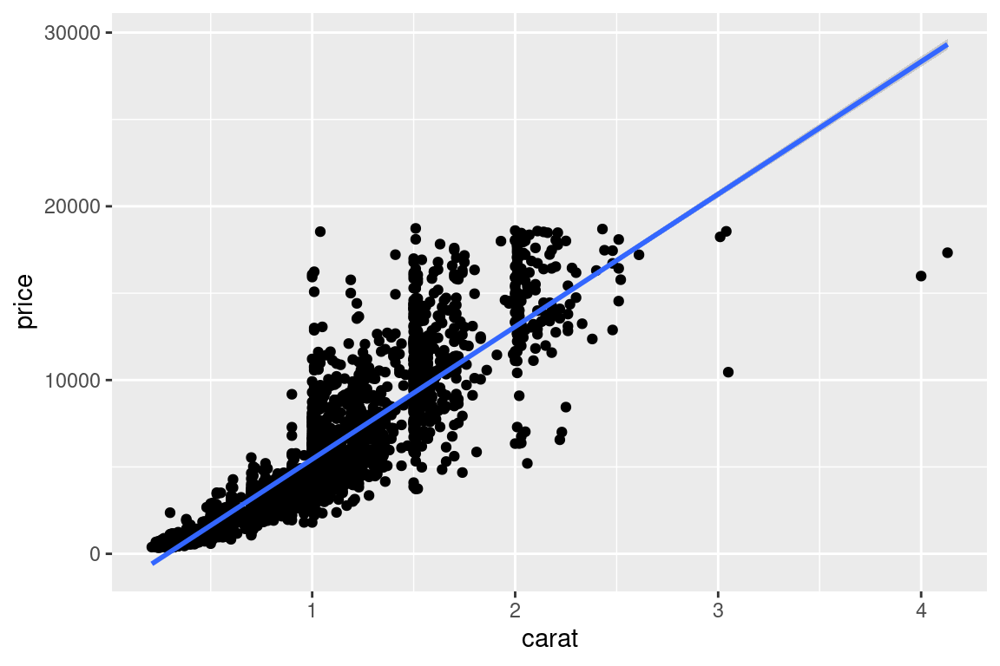
pandas code
# Find the line of best fit
a, b = np.polyfit(diamonds["carat"], diamonds["price"], 1)
diamonds["fit"] = a * diamonds["carat"] + b
plt.figure()
ax = diamonds.plot.scatter("carat", "price")
diamonds.plot.line("carat", "fit", color='red', ax = ax, legend = None)
plt.show()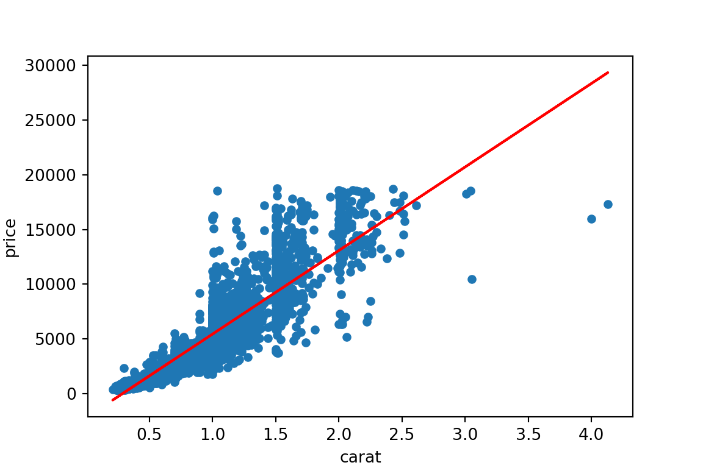
matplotlib code
plt.figure()
plt.scatter(diamonds["carat"], diamonds["price"], label='Data Points')
plt.plot(diamonds["carat"], a * diamonds["carat"] + b, label='Trend Line', color='red')
plt.xlabel('X-axis')
plt.ylabel('Y-axis')
plt.legend()
plt.show()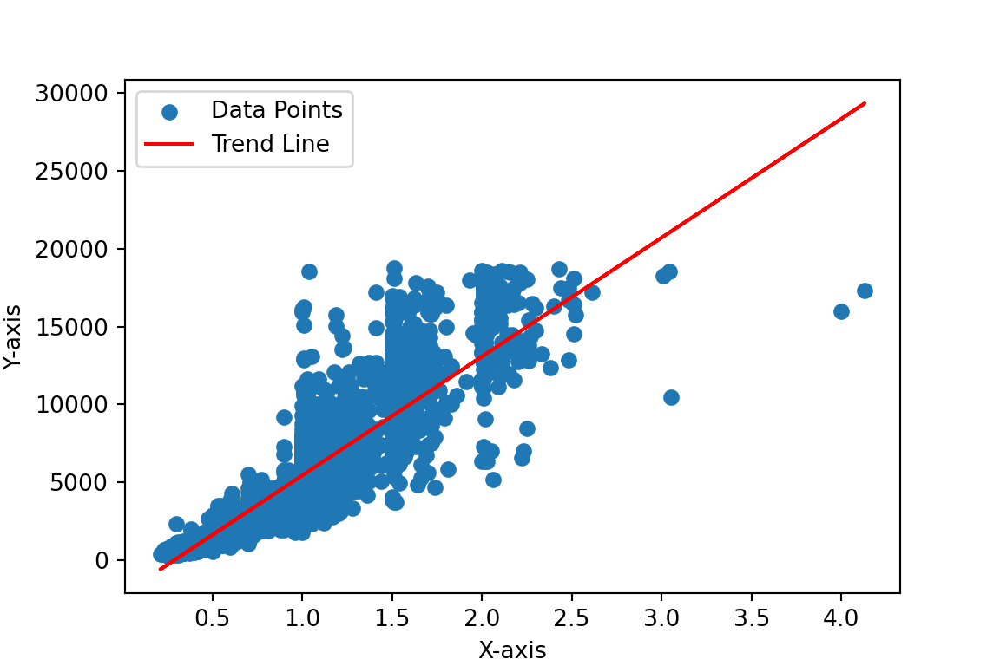
seaborn code
sns_plot = sns.lmplot(x='carat', y='price', data=diamonds, line_kws={'color': 'red'})
plt.show()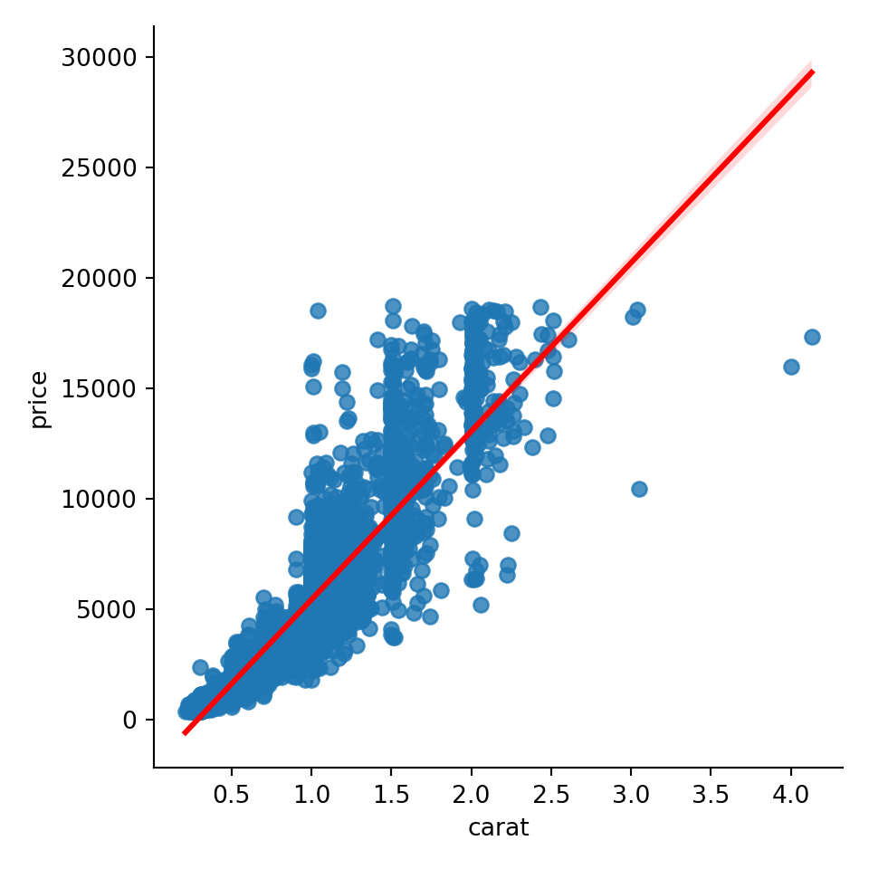